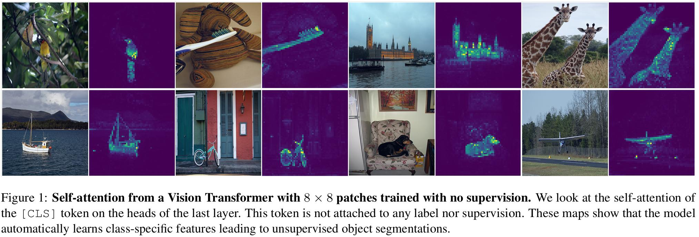
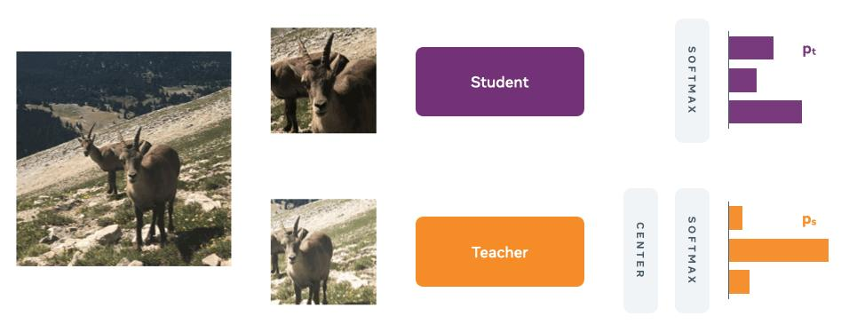
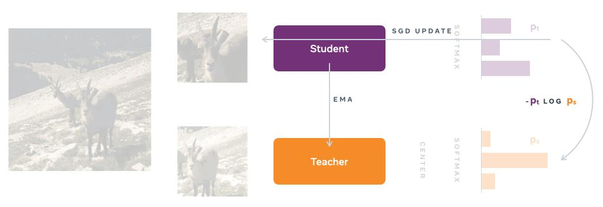
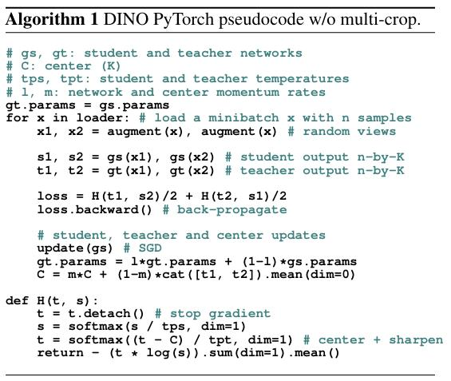

DINO论文笔记¶
综述¶
会议时间：ICCV 2021
主要思想¶
Transformer由于其远距离建模的优势，最近经常用于解决视觉的各大任务，常见的策略就是在大量数据上进行有监督预训练，获得较强的语义表征能力，之后在目标数据上进行微调，用于下游任务的应用。但这种方法并没有明显的好处，在增加计算量的同时，所提取的特征并没有表现出独特的属性（unique properties），这就不免产生疑问，利用有监督式的训练策略，是否充分挖掘了模型的特征表示潜力？
在本文中，作者利用弱监督学习策略，来进一步提升了transformer在视觉应用中的能力。考虑到transformer在NLP领域中取得成功的主要因素之一是使用了自监督训练，例如BERT使用MLM（Masked Language Model）的自监督训练策略，随机抹掉部分单词，之后根据上下文来预测这个单词；GPT采用ALM（Autoregressive Language Modeling）的自监督训练策略，让模型根据前文来预测下一个可能出现的单词。这些算法均使用句子中的单词来创建假设任务（pretext task），这种操作可以提供更丰富的学习信号，可以让模型在学习过程中学到更多的语义信息，相比于监督学习中，简单地预测每个句子固定单一的标签难以让网络学到这种丰富的语义信息，模型的理解能力往往会被句子的标签所约束。同样，在图像任务中，图像级别的监督常常会降低视觉的信息量，整幅图像丰富的语义信息会被简化为从几千个对象类别的预定义集合中选择的单个概念，所学到的视觉信息量会大大降低，这也是要用自监督学习策略来取代监督学习策略的一个核心出发点。
作者的自我监督学习方法可以表示为一种无标签的知识蒸馏操作（distillation with no labels, DINO），通过使用标准的交叉熵损失，让学生网络去学习教师网络的输出，同时教师网络由动量编码器（momentum encoder）构成，即教师网络的参数通过学生网络的参数来动量式地更新，最后作者使用中心化操作和锐化操作（centering and sharpening）来避免教师网络的崩溃问题（collapse）。此架构是比较灵活的，可以在CNN或者ViT上进行工作，不需要修改原始的网络架构，也不需要适应内部标准化操作（internal normalizations ）。
如下图所示，利用自监督学习的ViT特征明确包含了场景布局，特别是对象边界，这些关注区域可以在最后一个自注意力关注模块中直接提取，同时，自监督ViT网络所提取的特征在基本近邻分类器k-NN下表现特别好，无需任何微调就可以在ImageNet上达到78.3%的准确率。

方法¶
知识蒸馏
知识蒸馏是一种学习范式，让学生网络g_{\theta_s}去匹配教师网络g_{\theta_t}的输出，给定输入图像x，两个网络输出K维上的概率分布，分别表示为P_s和P_t（由网络g的输出进行softmax归一化得到）：
自监督学习
知识蒸馏范式在设计的初衷，就是为了针对两个不同的模型，用复杂度较高、性能较好的模型去提升复杂度较低、性能较弱的模型，将强模型的能力通过蒸馏的方式蒸给弱模型，因此需要让弱模型的输出往强模型的输出上靠拢。这里教师网络输出的结果相当于伪标签，让学生网络去学习，因此如果有一个训练好的教师网络，我们就可以在没有真实标签数据的情况下，来训练学生网络，让学生网络去教师网络的能力。而在这篇文章中，作者做了进一步的改进，假设教师网络和学生网络都是随机初始化的，也就是都需要进行参数更新，用教师网络生成的伪标签去训练学生网络，从而实现完全意义上的自监督训练，现在问题的核心就在于如何动态更新教师网络的参数。在这里，作者参考动量更新的思想，利用EMA策略，让学生网络的参数去更新教师网络的参数，这样学生网络向教师网络靠拢的同时也会改变教师网络，最终两个网络会朝着同一个输出结果趋势上优化，网络主要流程图如下图所示：

但其实还有个问题，如果教师网络和学生网络使用的是同一个输入，那么他们可以轻而易举地得到相同的输出，从而无需学会提取图中的语义信息也可以实现这一点，这与我们利用自监督学习去做模型预训练的初衷是背道相驰的，因此这里对两个模型的输入需要做不同的处理。
首先，使用多尺度裁剪策略构建同一图片下的不同视图。给定一张图像，生成不同视角图的集合V，这个集合包含两个尺寸较大的全局视图x^g_1,x^g_2和一些尺寸较小的局部视图，在训练过程中，所有视图都会传入学生网络得到输出，同时只将全局视图传入教师网络得到输出，损失函数可以表示为：
这一操作流程下来，网络会实现一个从局部语义到全局语义的统一过程，从而迫使网络可以提取图像中真正有意义的语义信息，只有这样，教师网络和学生网络才可能输出相同的特征分布，这样也实现了在无标签的情况下，提升模型特征提取能力的目的，算法整个前向传播流程如下图所示：

教师网络
与单纯的知识蒸馏任务不同，这里没有先验的教师参数\theta_t，因此我们只能通过学生网络的参数来得到教师网络的参数。在作者尝试了大量的方法之后，发现使用指数移动平均策略（exponential moving average, EMA），即动量编码器效果最好，更新规则为：
避免崩溃
作者在这里使用中心操作和锐化操作（centering and sharpening）来避免教师网络的崩溃问题，中心操作用于防止单个维度的特征占主导地位，会鼓励教师网络输出均匀的数据分布，而锐化操作则有相反的作用，运用这两种操作可以平衡他们的效果，足以避免教师网络在动量更新时的崩溃。中心操作相当于对教师网络的输出增加一个偏置c，即g_t(x)\leftarrow g_t(x)+c，其中c的更新也利用动量更新策略：

算法伪代码流程如下：

网络结构
神经网络g由主干特征提取网络f（ViT或ResNet）和投影头h组成：g=h\circ f，下游任务中使用的特征是由f输出的特征数据，投影头h是由隐藏层维度为2048的三层多层感知机以及一个K维权值归一化全连接层组成，学生网络和教师网络架构完全相同，ViT架构参数如下表所示：

总结¶
作者利用知识蒸馏和动量更新策略实现了ViT模型在视觉任务上的自监督训练，通过摆脱标签的约束，充分挖掘了ViT算法的特征表示潜力，同时该算法存在两个在未来的研究中可以利用的应用：①所提取的高质量特征传入k-NN算法可以实现较准的分类，因此该特征有利于用来做图像检索任务；②所得到的特征数据包含了场景布局，有利于弱监督图像分割任务。
部分源码¶
训练阶段
核心代码
for it, (images, _) in enumerate(metric_logger.log_every(data_loader, 10, header)):
# update weight decay and learning rate according to their schedule
it = len(data_loader) * epoch + it # global training iteration
for i, param_group in enumerate(optimizer.param_groups):
param_group["lr"] = lr_schedule[it]
if i == 0: # only the first group is regularized
param_group["weight_decay"] = wd_schedule[it]
# move images to gpu
images = [im.cuda(non_blocking=True) for im in images]
# teacher and student forward passes + compute dino loss
with torch.cuda.amp.autocast(fp16_scaler is not None):
teacher_output = teacher(images[:2]) # only the 2 global views pass through the teacher
student_output = student(images)
loss = dino_loss(student_output, teacher_output, epoch)
if not math.isfinite(loss.item()):
print("Loss is {}, stopping training".format(loss.item()), force=True)
sys.exit(1)
# student update
optimizer.zero_grad()
param_norms = None
if fp16_scaler is None:
loss.backward()
if args.clip_grad:
param_norms = utils.clip_gradients(student, args.clip_grad)
utils.cancel_gradients_last_layer(epoch, student,
args.freeze_last_layer)
optimizer.step()
else:
fp16_scaler.scale(loss).backward()
if args.clip_grad:
fp16_scaler.unscale_(optimizer) # unscale the gradients of optimizer's assigned params in-place
param_norms = utils.clip_gradients(student, args.clip_grad)
utils.cancel_gradients_last_layer(epoch, student,
args.freeze_last_layer)
fp16_scaler.step(optimizer)
fp16_scaler.update()
# EMA update for the teacher
# 每次读取一次数据，都会用学生网络的参数动量更新一次教师网络
with torch.no_grad():
m = momentum_schedule[it] # momentum parameter
for param_q, param_k in zip(student.module.parameters(), teacher_without_ddp.parameters()):
param_k.data.mul_(m).add_((1 - m) * param_q.detach().data)
# logging
torch.cuda.synchronize()
metric_logger.update(loss=loss.item())
metric_logger.update(lr=optimizer.param_groups[0]["lr"])
metric_logger.update(wd=optimizer.param_groups[0]["weight_decay"])
DINO损失
class DINOLoss(nn.Module):
def __init__(self, out_dim, ncrops, warmup_teacher_temp, teacher_temp,
warmup_teacher_temp_epochs, nepochs, student_temp=0.1,
center_momentum=0.9):
super().__init__()
# 学生网络的软化温度
self.student_temp = student_temp
# 中心C的动量更新参数
self.center_momentum = center_momentum
# 小patch的数量，默认是10
self.ncrops = ncrops
# 初始化中心参数center
self.register_buffer("center", torch.zeros(1, out_dim))
# we apply a warm up for the teacher temperature because
# a too high temperature makes the training instable at the beginning
# 教师网络的软化温度，对教师网络的输出做软化，可以提升训练初期的稳定性
self.teacher_temp_schedule = np.concatenate((
np.linspace(warmup_teacher_temp,
teacher_temp, warmup_teacher_temp_epochs),
np.ones(nepochs - warmup_teacher_temp_epochs) * teacher_temp
))
def forward(self, student_output, teacher_output, epoch):
"""
Cross-entropy between softmax outputs of the teacher and student networks.
"""
# 先对学生网络的输出做软化
student_out = student_output / self.student_temp
student_out = student_out.chunk(self.ncrops)
# teacher centering and sharpening
# 对教师网络的输出做软化，同时利用center做平滑操作
temp = self.teacher_temp_schedule[epoch]
teacher_out = F.softmax((teacher_output - self.center) / temp, dim=-1)
# 切断teacher输出的梯度，交叉熵损失只用于优化学生网络
teacher_out = teacher_out.detach().chunk(2)
total_loss = 0
n_loss_terms = 0
for iq, q in enumerate(teacher_out):
for v in range(len(student_out)):
if v == iq:
# we skip cases where student and teacher operate on the same view
continue
loss = torch.sum(-q * F.log_softmax(student_out[v], dim=-1), dim=-1)
total_loss += loss.mean()
n_loss_terms += 1
total_loss /= n_loss_terms
# 利用教师网络的输出来更新center参数
self.update_center(teacher_output)
return total_loss
@torch.no_grad()
def update_center(self, teacher_output):
"""
Update center used for teacher output.
"""
# 首先对输出沿batch求均值
batch_center = torch.sum(teacher_output, dim=0, keepdim=True)
dist.all_reduce(batch_center)
batch_center = batch_center / (len(teacher_output) * dist.get_world_size())
# ema update
# 之后动量更新center参数
self.center = self.center * self.center_momentum + batch_center * (1 - self.center_momentum)
以上仅是笔者个人见解，若有问题，欢迎指正